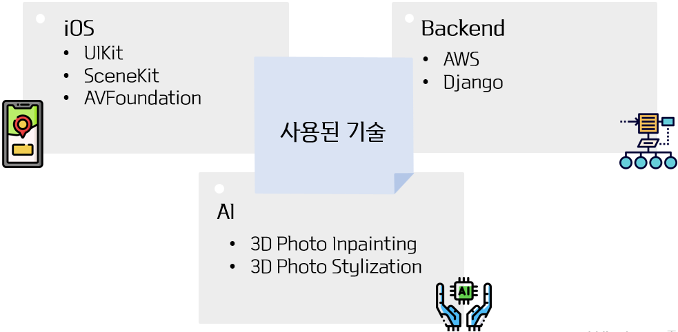

SPRINTER:
Stylized
Point cloud
Rendering &
INTERaction service
사용자의 사진을 3D로 복원 후 stylization까지!
프로젝트 소개
우리 프로젝트의 결과물은 어플이다. 사용자가 어플에 사진을 입력하고 스타일을 선택하면, 그 사진을 3D로 복원하고 3D 결과물에 스타일을 입혀서 3D 결과물과 사용자가 상호작용할 수 있는 어플을 제작한다.
Abstract
Sight is the most powerful sense among the five senses.
There are several attempts to achieve visual interaction between humans and systems in many fields.
In our projects, we develop an app where the input is a photo but the output is a 3D object users can interact with.
소개합니다!
사진 한장으로 만드는 자신만의 3D 입체 사진

사용자에게 입력받은 하나의 사진을 3D로 변환 후, Stylization 해주는 어플리케이션입니다. 기존에 없는 새로운 타입의 사진 편집 어플리케이션이며, 사용자로 하여금 새로움과 재미를 선사합니다. 3D화 된 결과물에는 유명 화가의 화풍 혹은 그림 장르와 같은 여러 테마를 적용이 가능합니다.
어떤 기술로?

AI
3D photo inpainting
: 물체에 의해 가려진 영역의 color와 depth 를 예측하여 얻은 color와 depth 값을 추출합니다.
3D photo Stylization
: 3D photo inpainting으로부터 얻은 color와 depth 정보를 통해 이미지를 3D화 후 stylization을 수행합니다.
Front-End (iOS)
AVFoundation : 사진 촬영 및 필터 선택을 위한 customcameraview 구현에 사용합니다.
SceneKit : 3D모델로 구현화된 결과물을 화면에 출력하기 위해 사용합니다.
Back-End
AWS : REST API 구현 및 EC2 인스턴스, S3 스토리지를 위해 사용합니다.
Django : AI 모델 구동 서버 구축을 위해 사용합니다.
이렇게 사용합니다
1) Testflight(Apple에서 앱을 테스트할 수 있는 플랫폼)을 다운받는다
2) 해당 링크를 통해 어플을 다운받는다.
3) 어플을 실행하고, 사진을 입력하고, 스타일을 고른다.
4) 생성된 결과물을 상하좌우로 슬라이드해서 즐긴다.